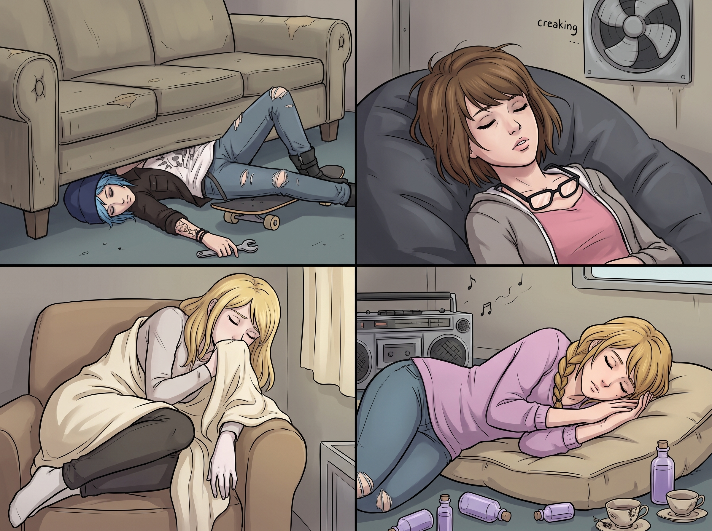

命案現場的誤會

黃昏六點半，波特蘭東區的舊鐵道花園被濃稠的紫紅色暮色籠罩。
那首 Lo-Fi 音樂在點唱機裡安靜循環了二十多遍，低沉的黑膠底噪配上緩慢的鼓點，徹底將客廳變成了一座「全員深度昏迷」的靜止結界。
一、現場「犯罪級」死寂構圖
兼職跑腿的外賣配送員 Emma 騎著電動車停在一號車廂門口。她手裡拎著兩大袋剛出爐的墨西哥塔可餅和熱起司玉米片，按響了門鈴：「叮咚——叮咚——您好！訂單到了！」
門內一片死寂。
由於下午通風，木格玻璃門虛掩著一條縫。Emma 疑惑地推開一條小縫往裡看，透過昏暗的暖黃暮光，眼前的景象讓她倒吸一口涼氣，手裡的保溫袋差點直接砸在地上：
Chloe 趴在帶輪滑板上，半個身子卡在沙發底下，只露出一截穿著破洞牛仔褲的長腿和一隻垂在地毯上的手臂，手指還死死扣著一個扳手，整個人紋絲不動；Max 整個人陷在深灰色懶人沙發裡，長髮凌亂地遮住半張臉，黑框眼鏡歪斜地掛在下巴上，嘴唇微張，安詳得宛如文藝復興時期的石雕；Victoria 縮在單人扶手椅裡，羊絨毯一路拉到鼻尖，一隻白皙的手腕無力地垂在扶手外側；Kate 側臥在地毯厚墊上，雙手合十放在臉頰邊，身邊圍繞著散落的薰衣草精油瓶與幾隻乾涸的茶杯。
整個車廂沒有一點交談聲，只有音響裡那段空靈緩慢的旋律，伴隨著老舊排風扇緩慢轉動的吱呀聲。
二、911撥號介面與大天使的驚魂甦醒
Emma 的心跳瞬間飆到了每分鐘一百八十下。
「老天爺……化學氣體中毒？還是集體……」
她手忙腳亂地掏出手機，指尖發抖地在撥號鍵盤上按下了 9-1-1，大拇指懸在綠色呼叫鍵上方一毫米處，聲音帶著快要哭出來的顫音朝裡面喊：「喂……？！裡面有人能聽見嗎？！我、我要叫救護車了哦！！」
就在這千鈞一髮之際，地毯上的 Kate 睫毛微微顫動了一下。
大天使迷迷糊糊地睜開清澈的藍眼睛，帶著剛睡醒的鼻音，揉了揉眼角，像一隻溫柔的小鹿般從毛毯堆裡坐了起來，對著門口快要嚇瘋的外賣小姐姐露出了一個純淨無比的微笑：「啊……是塔可餅到了嗎？真是不好意思，音樂太舒服了……大家好像都睡得太沉了呢。」
三、骨牌式驚醒與名媛的尊嚴搶救
「叫……叫救護車？！」
聽到門口的動靜，沙發底下的 Chloe 猛地一抬頭，「咚」的一聲悶響狠狠撞在實木沙發底座上，連人帶滑板整整滑出了兩米遠，捂著腦門齜牙咧嘴地大吼：「靠！敵襲嗎？！老娘的扳手呢？！」
Max 被這聲巨響嚇得整個人從懶人沙發裡彈了起來，黑框眼鏡啪嗒掉在胸前，一臉懵懂地抓起旁邊的相機對著空氣狂按快門：「暴風雨來了嗎？！我剛才沒倒流時間啊？！」
扶手椅上的 Victoria 也被徹底吵醒。名媛在一秒鐘內迅速坐直，用最快的速度把凌亂的長髮撩到耳後，優雅地拉平了羊絨開衫的褶皺，強行撫平抽搐的嘴角，清了清嗓子：「……非常感謝您的配送。請把食物放在長桌上即可，順便替我向你們店長轉達——你們的保溫袋密封性做得非常符合標準。」
四、熱塔可與夜幕下的全員覆盤
五分鐘後，誤會解除的 Emma 接過了 Victoria 隨手遞出的一張高額小費，以及 Kate 親手塞給她的一小包剛烘好的草本曲奇，心有餘悸又忍不住笑著騎車離開。
長木桌前，四個人裹著毛毯，大口嚼著熱氣騰騰的辣牛肉塔可與脆玉米片。
「差一點……」Chloe 揉著被撞起包的額頭，灌了一大口冰鎮可樂，轉頭看著 Max 大笑，「考菲爾德長官，剛才要是那通 911 真的撥出去，明天波特蘭日報的頭條就是——《震驚！東區四位工坊女匠人因聽 Lo-Fi 音樂集體昏迷，疑似遭遇降智生化武器》！」
Victoria 慢條斯理地用檸檬水擦拭著手指，雖然依舊維持著名媛的冷靜，但嘴角卻泛起了一絲藏不住的笑意：「至少證明了一件事——那首 Lo-Fi 新曲，具備直接癱瘓整個工坊重型防禦系統的核彈級催眠效果。」
點唱機在角落依然流淌著柔和的爵士慢調，窗外已是繁星滿天。四個人裹在同一張巨大的毯子下分食著最後一塊玉米片，在滿室的肉香、笑聲與微涼的夜風中，度過了波特蘭東區最荒謬卻也最溫暖的一個黃昏。